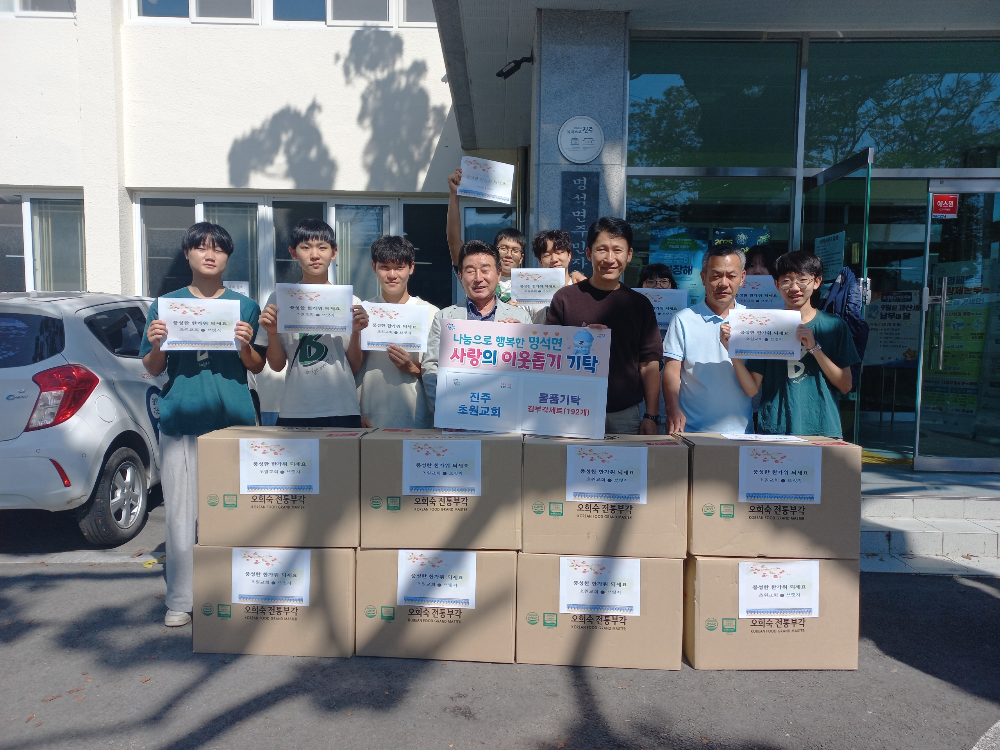
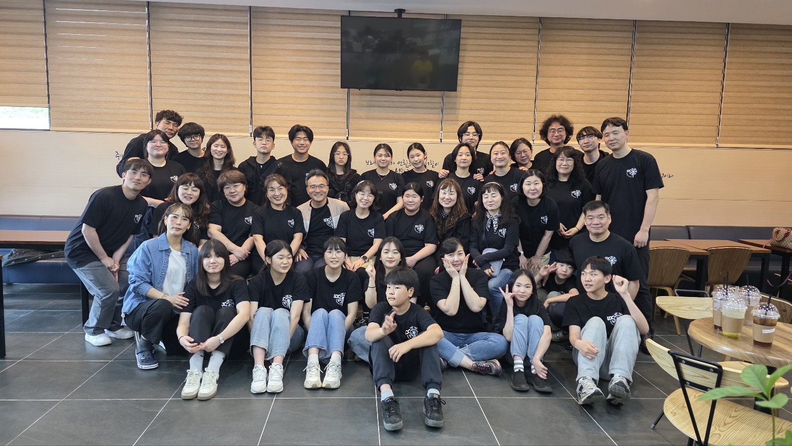
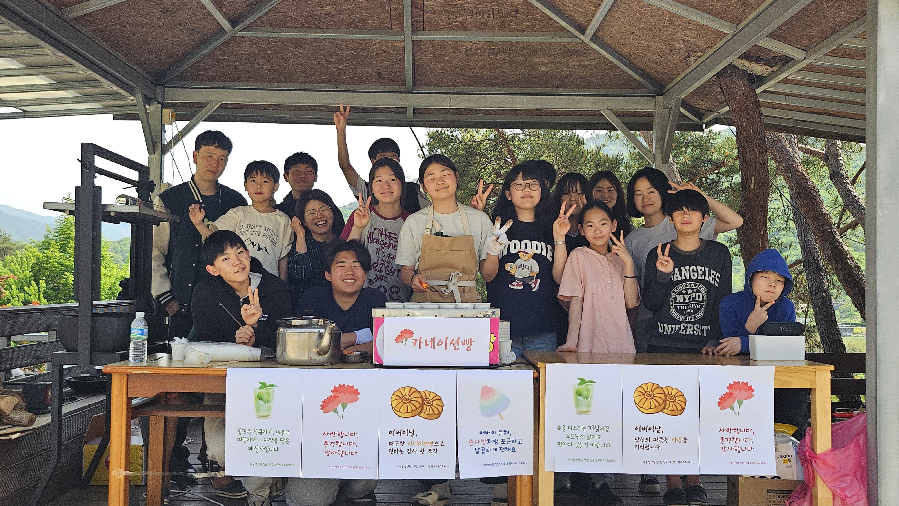

진주초원 사회적협동조합
JINJU MEADOW SOCIAL COOPERATIVE
조합소개
정보공개
활동기록
참여/신고
활동기록
진주초원의 생생한 활동 모습을 소개합니다

즐거운 어버이날
카네이션 나눔 행사

사랑의 김장
지역 어르신을 위한 나눔

환경 정화 활동
깨끗한 마을 만들기
교육 프로그램
아이들과 함께하는 시간
정기 총회
조합원들과의 소통
마을 축제
다함께 즐기는 축제